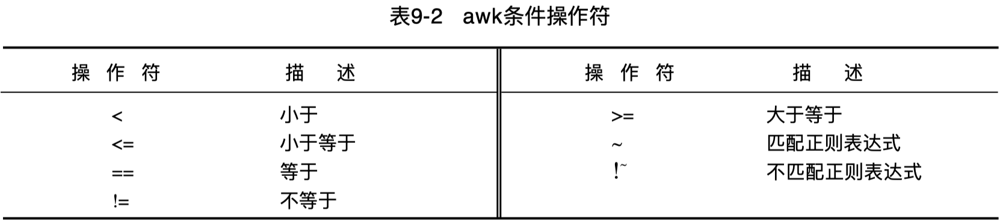

Linux Command - awk pattern
Linux 下的 awk 命令中的模式匹配。
pattern 可为逻辑运算表达式或正则表达式。
$ cat grade.txt
M.Tansley 05/99 48311 Green 8 40 44
J.Lulu 06/99 48317 green 9 24 26
P.Bunny 02/99 48 Yellow 12 35 28
J.Troll 07/99 4842 Brown-3 12 26 26
L.Tansley 05/99 4712 Brown-2 12 30 28

域匹配#
为使一域号匹配正则表达式，使用符号 ~ 后紧跟正则表达式。
也可以用 if 语句，if 后面的条件用 () 括起来。
$ awk '{if($4~/Brown/) print $0}' grade.txt
J.Troll 07/99 4842 Brown-3 12 26 26
L.Tansley 05/99 4712 Brown-2 12 30 28
根据 pattern { action } 的语法，可以改写为标准范式：
缺省情况下，awk 将打印所有匹配记录，可以省略动作部分，进一步简写如下：
假定要使字符串精确匹配，比如说查看学生序号 48，文件中有许多学生序号包含 48。
如果在 field-3 中查询序号48，awk 将返回所有序号带48的记录：
# awk '{if($3~/48/) print $0}' grade.txt
# awk '$3~/48/{print $0}' grade.txt
$ awk '$3~/48/' grade.txt
M.Tansley 05/99 48311 Green 8 40 44
J.Lulu 06/99 48317 green 9 24 26
P.Bunny 02/99 48 Yellow 12 35 28
J.Troll 07/99 4842 Brown-3 12 26 26
为了精确匹配，需要使用 == 判断：
# awk '{if($3=="48") print $0}' grade.txt
# awk '$3=="48"{print $0}' grade.txt
$ awk '$3=="48"' grade.txt
P.Bunny 02/99 48 Yellow 12 35 28
有时要浏览信息并抽取不匹配操作的记录，与 ~ 相反的符号是 !~， 意即不匹配。
只对 field-4 进行不匹配操作，方法如下：
如果想要查询非 Brown-2 的腰带级别，可使用 != 判断：
多行划分区块#
考虑工程根目录下有以下 code owner 的 CR 配置文件 bak.code.yml：
- path: /Classes/ui/DeviceMgr/PrinterTableView.h
owners:
- zhangsan
- lisi
- wangwu
owner_rule: 1
- path: /Classes/ui/DeviceMgr/PrinterTableView.m
owners:
- zhangsan
- lisi
- wangwu
owner_rule: 1
- path: /Classes/ui/DeviceMgr/PrinterDeviceCell.h
owners:
- zhangsan
- lisi
- wangwu
owner_rule: 1
- path: /Classes/ui/DeviceMgr/PrinterDeviceCell.m
owners:
- zhangsan
- lisi
- wangwu
owner_rule: 1
执行以下 sed 语句可以界定目录 /Classes/ui/DeviceMgr/ 的 CR 匹配规则块记录：
考虑用 awk 等效实现，可以以 - path: 作为记录分割符，以 \n 作为字段分割符，匹配打印结果如下：
$ awk 'BEGIN {RS="- path: "; FS="\n"; ORS=""} $1~/\/Classes\/ui\/DeviceMgr\//' bak.code.yml
/Classes/ui/DeviceMgr/PrinterTableView.h
owners:
- zhangsan
- lisi
- wangwu
owner_rule: 1
/Classes/ui/DeviceMgr/PrinterTableView.m
owners:
- zhangsan
- lisi
- wangwu
owner_rule: 1
/Classes/ui/DeviceMgr/PrinterDeviceCell.h
owners:
- zhangsan
- lisi
- wangwu
owner_rule: 1
/Classes/ui/DeviceMgr/PrinterDeviceCell.m
owners:
- zhangsan
- lisi
- wangwu
owner_rule: 1
默认的输出记录分割符为换行符，输出记录之间有空行。设置了 ORS="" 后，输出记录之间无空行。
以上输出可以看到，块记录的第1行缺少分隔符 RS 前缀，考虑补上：
awk 'BEGIN {RS="- path: "; FS="\n"; ORS=""; OFS="\n"}
$1~/\/Classes\/ui\/DeviceMgr\//{
$1="- path: "$1;
print $0
}' bak.code.yml
思考：如何进一步基于 awk 命令移除这些匹配的 CR 规则区块记录呢？
记录匹配#
表达式 $0 ~/Brown/，意即查询包含模式 Brown 腰带级别的记录并打印它；
表达式 $0 !~/Brown/，意即查询不包含模式 Brown 腰带级别的记录并打印它；
$ awk '$0~/Brown/' grade.txt
J.Troll 07/99 4842 Brown-3 12 26 26
L.Tansley 05/99 4712 Brown-2 12 30 28
$ awk '$0!~/Brown/' grade.txt
M.Tansley 05/99 48311 Green 8 40 44
J.Lulu 06/99 48317 green 9 24 26
P.Bunny 02/99 48 Yellow 12 35 28
对于整条记录而非某个域字段进行匹配时，可以省略 $0 不写。
- 匹配记录：
awk '/Brown/' grade.txt - 不匹配记录：
awk '!/Brown/' grade.txt
模式匹配区间#
要打印处于 start_pattern 与 end_pattern 之间的文本，可使用下面的语法：
例如，筛选打印 .code.yml 中目录 /Classes/ui/DeviceMgr/ 的 CR 匹配规则块记录：
等价的 sed 表达式如下：
匹配和不匹配#
Negative matching using grep (match lines that do not contain foo)
从文件 file 中过滤出包含 foo 的行：
从文件 file 中过滤出既不包含 foo，也不包含 bar 的行：
从文件 file 中过滤出既不包含 foo，也不包含 bar，但包含 foo2 或 bar2 的行：
匹配规则#
任意字符#
抽取名字，其记录第一域的第四个字符是 a，使用句点 . 表示任意字符。
表达式 /^...a/ 意为行首前三个字符任意，第四个是a，尖角符号代表行首。
$ awk '$1 ~/^...a/' grade.txt
M.Tansley 05/99 48311 Green 8 40 44
L.Tansley 05/99 4712 Brown-2 12 30 28
候选字符#
在测试正则表达式时提到可匹配 [] 内任意字符或单词，因此若查询文件中级别为 green的所有记录，不论其大小写，表达式应为 /[Gg]reen/。
匹配数字#
How to use regular expressions in awk
# 无法使用 \d ？
$ networksetup -listnetworkserviceorder | awk '/\(\d\) Wi-Fi/'
# 改用其他等效方式
$ networksetup -listnetworkserviceorder | awk '/\(.\) Wi-Fi/'
(1) Wi-Fi
$ networksetup -listnetworkserviceorder | awk '/\([1-9]\) Wi-Fi/'
(1) Wi-Fi
$ networksetup -listnetworkserviceorder | awk '/\([[:digit:]]\) Wi-Fi/'
(1) Wi-Fi
或关系匹配#
为抽取级别为 Yellow 或 Brown 的记录，使用竖线符（|），意为匹配 | 两边模式之一。
注意：使用竖线符时，语句必须用圆括号括起来。
$ awk '/(Yellow|Brown)/' grade.txt
P.Bunny 02/99 48 Yellow 12 35 28
J.Troll 07/99 4842 Brown-3 12 26 26
L.Tansley 05/99 4712 Brown-2 12 30 28
与或条件#
与条件关系：
# awk '{if($1=="P.Bunny" && $4=="Yellow") print $0}' grade.txt
# awk '$1=="P.Bunny" && $4=="Yellow" {print $0}' grade.txt
$ awk '$1=="P.Bunny" && $4=="Yellow"' grade.txt
P.Bunny 02/99 48 Yellow 12 35 28
或条件关系：
# awk '{if($4=="Yellow" || $4~/Brown/) print $0}' grade.txt
# awk '$4=="Yellow" || $4~/Brown/ {print $0}' grade.txt
$ awk '$4=="Yellow" || $4~/Brown/' grade.txt
P.Bunny 02/99 48 Yellow 12 35 28
J.Troll 07/99 4842 Brown-3 12 26 26
L.Tansley 05/99 4712 Brown-2 12 30 28
CSV 匹配示例#
假设代码扫描分析平台导出的 LineTooLong 警告问题清单为 issue_data-LineTooLong.csv。
其表头如下：
$ awk 'FNR==1' issue_data-LineTooLong.csv
问题ID,文件,规则名,规则realname,出错信息,状态,处理方法,负责人,严重级别,版本号,项目ID,发现版本时间,扫描ID,是否提单,链接
若想过滤出问题文件列表，可执行记录匹配或域匹配：
$ awk -F ',' '/File\/NearFile/{print $2}' issue_data-LineTooLong.csv
$ # or
$ awk -F ',' '$2~/File\/NearFile/{print $2}' issue_data-LineTooLong.csv
以下对所有的问题文件（$2）执行 clang-format 格式化命令：
awk -F ',' '{cmd="clang-format --verbose -style=file -i "$2;system(cmd)}' issue_data-LineTooLong.csv
以下对匹配路径的问题文件（$2）执行 clang-format 格式化命令：
awk -F ',' '$2~/File\/NearFile\//{cmd="clang-format --verbose -style=file -i "$2;system(cmd)}' issue_data-LineTooLong.csv
考虑将匹配路径的问题文件名逐行导出到txt文件：
然后按行读取为数组，再执行for循环格式化：
array=($(cat issue-file-list.txt)) # array=($(awk 1 issue-file-list.txt))
echo ${#array[*]}
for file in ${array[@]}; do
clang-format --verbose -style=file -i $file
done
如果要通过手工收集少量的问题文件进行批处理格式化，可将需要格式化的文件名（相对 .clang-format 隐藏文件所在项目根目录的路径）逐行填写到 txt 文件，再执行以上脚本。
如果要针对指定目录及其子目录下的所有iOS代码文件执行格式化，可考虑以下更加简洁的集成化脚本：
find $subdir -type f \( -iname "*.h" -iname "*.hpp" -iname "*.c" -o -iname "*.cpp" -o -iname "*.m" -o -iname "*.mm" \) | xargs clang-format --verbose -style=file -i
subdir 为需要格式化的目录路径，相对 .clang-format 隐藏文件所在项目根目录的路径。